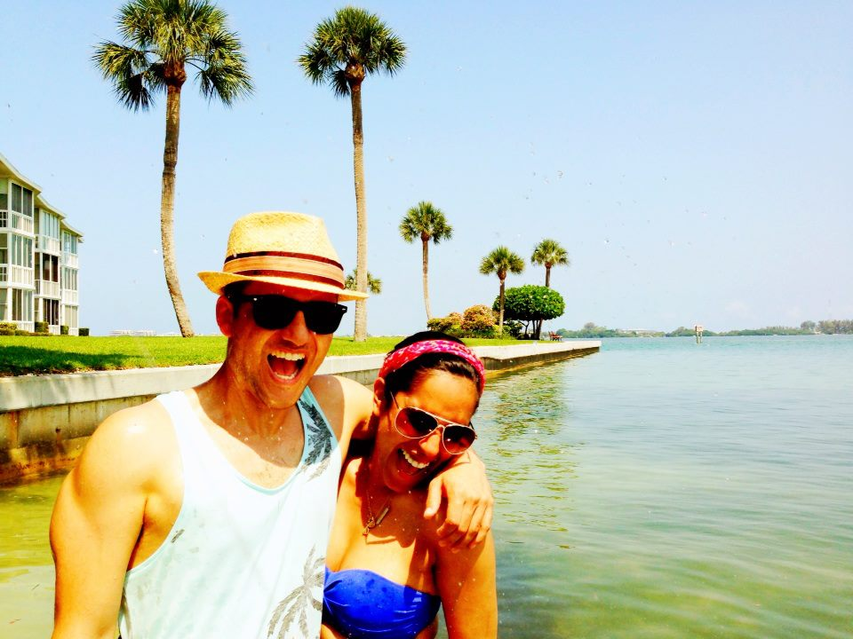

Morgan Polotan
New York, NY
Too many of us are not living our dreams because we are living our fears.
- Les Brown
My background is in entrepreneurship and I love the start-up environment. As a business major at Northeastern University I received a certificate in entrepreneurship and had the opportunity to intern with HubSpot's inbound marketing team. I've worked in multiple aspects of early-stage companies, as co-founder, marketing director and most recently consultant, where I helped non-profit start-ups receive donor investment. This May I decided to leave my job as a consultant, move to NYC, and learn to program. I'm studying front-end development @Thinkful and software development @Fullstack Academy.
What will I contribute to the world through coding?
I want to work for and/or build start-up companies that disrupt education and healthcare, making them higher-quality, cheaper, and more convenient.
What do I want coding to provide for me?
I want to have the financial means to provide for my mother, father and girlfriend so that they only work if they want to.